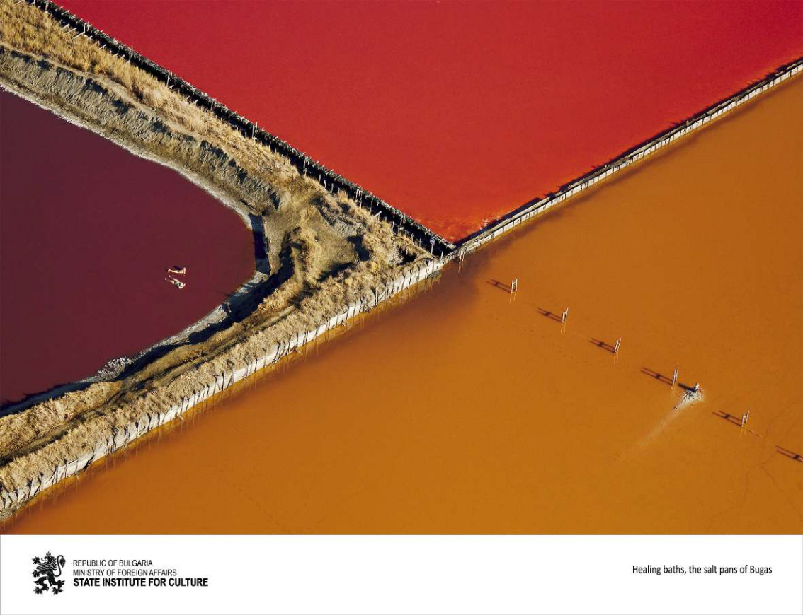

Tengerparti turizmus
Arapja népszerű strand Bulgária déli Fekete-tengeri partján...
Крайбрежен туризъм
Арапя е популярен плаж на южното Черноморие...
Coastal tourism
Arapya is a popular beach on Bulgaria’s southern Black Sea coast...
Плаж Арапя / Arapya Beach

Arapja népszerű strand Bulgária déli Fekete-tengeri partján...
Арапя е популярен плаж на южното Черноморие...
Arapya is a popular beach on Bulgaria’s southern Black Sea coast...